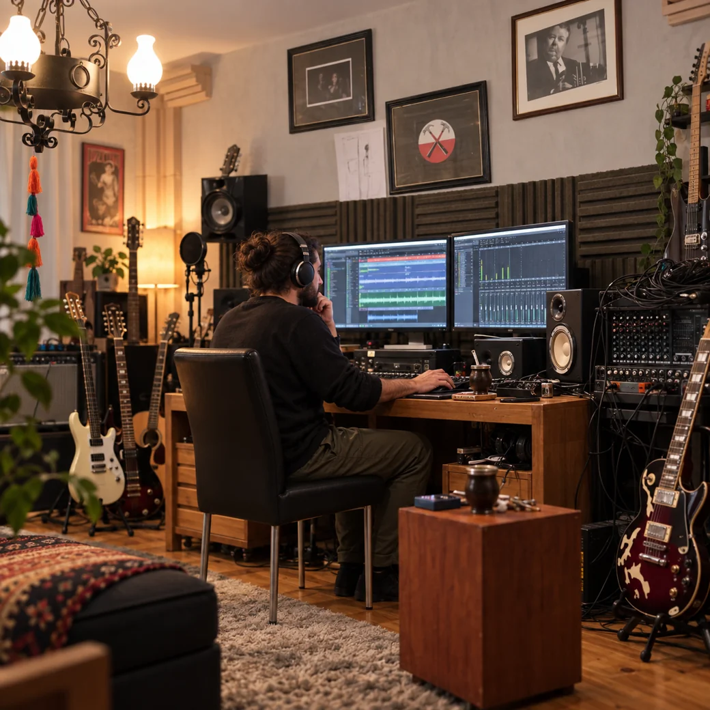

Grabación
Registrá tu material y trabajá sobre él para construir una versión más completa de tu proyecto.

Producción, grabación y sonido
Grabación, edición, secuencias, co-composición y acompañamiento para desarrollar tu música de forma clara y creativa.

Dale forma a tu música
Cada proyecto necesita un proceso diferente. En NovaStage podés trabajar desde una idea inicial hasta una producción más desarrollada.
Registrá tu material y trabajá sobre él para construir una versión más completa de tu proyecto.
Ajustamos y editamos material existente para adaptarlo a las necesidades de cada producción.
Creación y preparación de secuencias para ensayos, presentaciones y proyectos musicales.
Te acompañamos en el desarrollo de una composición propia, trabajando estructura, arreglos y recursos musicales.
Orientación para tomar mejores decisiones sobre grabación, herramientas y procesos de producción.
Del primer boceto al resultado final
No necesitás llegar con todo resuelto. El proceso se adapta al punto en el que esté tu material y a lo que quieras conseguir.
Conversamos sobre el proyecto, tus referencias y el resultado que te gustaría alcanzar.
Organizamos qué necesita el material y qué herramientas podemos utilizar para desarrollarlo.
Trabajamos sobre la producción, grabación o edición hasta llegar a un resultado coherente con tu propuesta.
También te acompañamos en lo técnico
Si necesitás orientación para grabar, preparar material o entender mejor las herramientas que estás usando, también podés trabajar con NovaStage desde el asesoramiento.
El objetivo es encontrar soluciones que tengan sentido para lo que querés hacer, sin complicar innecesariamente el proceso.
Tu proyecto puede empezar acá
Contanos en qué estás trabajando y vemos juntos cómo NovaStage puede ayudarte a llevarlo adelante.
Hablar sobre mi proyecto